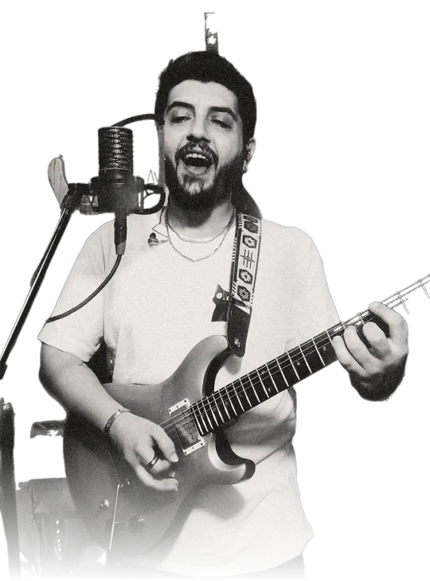
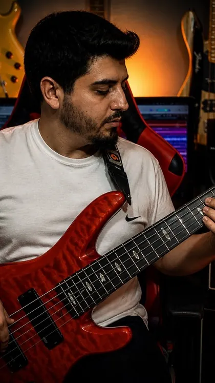
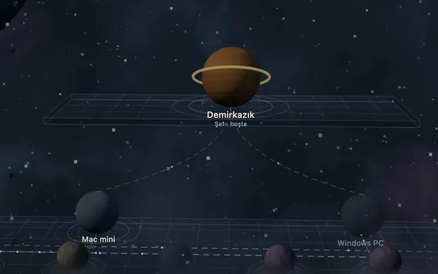
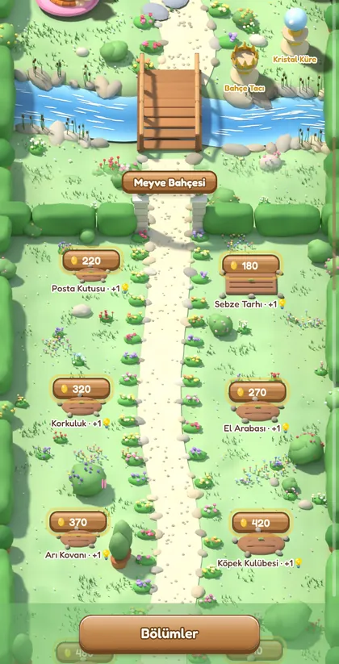
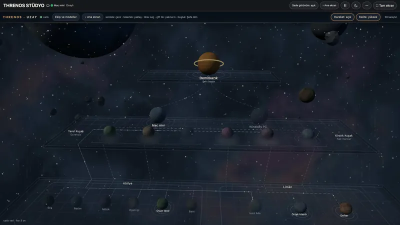
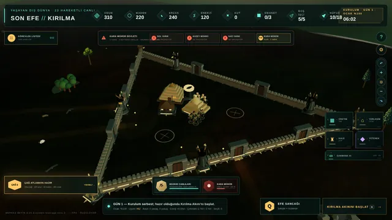

Aydın'da yaşıyor,
stüdyosu da orada
Müzik prodüktörü
ve oyun geliştirici
Müzik prodüktörü, mix ve mastering mühendisi, müzik eğitimcisi ve solo oyun geliştirici.
Müzik ve oyun yapıyorum; ikisini ürettiğim sistemi de kendim kuruyorum.
Günlük hayatta sıkıştırdığımız benlikleri sahnede açmak: 2007'de ilk grubuma ad olan fikir, bugün de aynı.
Dinle

Aldırma Gönül
Edip Akbayram yorumu: bağlama ve elektro gitar
-
Büyük Ev / Siyabend
Ekin Tutkun'la mashup: bas gitar
-
Halimem
Türkü yorumu: gitar ve vokal

Instagram'da izle (yeni sekmede açılır)Atmaca
Bas gitar yorumu
Oynatınca video YouTube'dan yüklenir.
VitrinBugün masamda dört iş var; dördü de aynı stüdyodan çıkıyor.

Geliştirmede (yayınlanmadı, ev içi testte)Son çalışma:
Issız Ada
Sevdiğim biriyle, iki ayrı bilgisayardan birlikte oynayabileceğimiz bir oyun istedim.

Geliştirmede (telefon pilotu, mağazada değil)Son çalışma:
Bloomslide
Blokları tek parmakla kaydır; çözdüğün her bölüm bahçene bir şey ekler.

Çalışıyor (kendi kullanımım, satılan ürün değil)Son çalışma:
THRENOS STÜDYO
İki bilgisayarım ve bir düzine model tek masada: işi dağıtan, sonucu denetleten üretim merkezim.
YayındaSon çalışma:
Müzik ve ses
Bastan vokale, sahneden stüdyoya: kayıtlarım ve başkaları için yaptığım işler.
Geliştirmede (yayınlanmadı, ev içi testte)Son çalışma:
Issız Ada
Bu oyunu tek başıma, Godot'la yapıyorum. Uçak bir adaya düşer; Sarp ile Defne enkazı toplar, barınak kurar, ateş yakar ve orada birlikte yaşamayı öğrenir. Geliştirme günlüğünün müziği de benim. Oyuncu testi yapıldı; mağazada değil.
İzle: geliştirme günlüğü #1 (yeni sekmede açılır)Dinle: kayıtlarım


Geliştirmede (telefon pilotu, mağazada değil)Son çalışma:
Bloomslide
Bloomslide'ı telefonda tek parmakla oynanan sakin bir bulmaca olarak tasarladım. Telefon pilotu 120 doğrulanmış bölümle yapıldı.


- Bir bölüm, otomatik doğrulamadan geçmeden oyuna girmiyor
- İç sürüm 1.1.0: kış bölgesinde 20 yeni bölüm ve kayan buz bloğu
- Oyun kaydı yalnız telefonda; hesap ve sunucu yok
Çalışıyor (kendi kullanımım, satılan ürün değil)Son çalışma:
THRENOS STÜDYO
Masa'yı, iki bilgisayarım tek bir üretim merkezi gibi çalışsın diye kendim kurdum: Windows bilgisayarım ve Mac mini. Bir iş verdiğimde planlayıcı model işi parçalara bölüyor; parçalar önce yerel ve ücretsiz modellere, gerektiğinde ücretli modellere gidiyor. Ayrı denetçi ajanlar sonucu kontrol ediyor; para harcayan, yayın yapan ya da geri alınamayan her adım benim onayımı bekliyor.
Masa 1.0 denetimi Ekim 2026
11 ajan, 60 iddiayı tek tek sınadı.
- 43 doğru
- 16 kısmen doğru
- 1 yanlış
Issız Ada kör jürisi, 1. tur Ekim 2026
10 bağımsız model aynı sürümü, kimin yaptığını bilmeden değerlendirdi: kayıt güvenliği, co-op, test kapısı ve performans. 21 bulgu düzeltme kuyruğunda; sürüm canlıya alınmadı.
- 0 kabul
- 6 şartlı kabul
- 4 ret


Müzik ve ses2007 — bugün
Sahneden stüdyoya,
bas gitarla.
Sahneden stüdyoya bas gitar, klasik ve elektro gitar, bağlama, klavye ve vokalle geldim. Kendi stüdyomda kayıt alıyor, mix ve mastering yapıyorum; yaklaşık 15 yıldır ders veriyorum.
Fotoğraftaki kayıtAtmaca — bas gitar yorumuDinle
Krediler
Başkaları için yaptığım işler. Kendi kayıtlarım Dinle şeridinde.
- Tadımlık 1 — Issız Ada geliştirme günlüğü #1 (yeni sekmede açılır) Müzik
- Pınar Göktaş ve Kedi — İki Günlük Dünya (yeni sekmede açılır) Mastering
- Ekin Tutkun — Yaşamak Bu Değil (yeni sekmede açılır) Mix ve mastering
- 100. Yıl Cumhuriyet Konseri — 1. Ordu Bölge Bando Komutanlığı ve Marmara Üniversitesi, 26 Ekim 2023 (yeni sekmede açılır) Bas gitar
- Ne Var Ki — Hamdım Piştim (yeni sekmede açılır) Bas gitar
Şarkın, kaydın ya da oyunun için ses.
- Müzik prodüksiyonu
- Mix ve mastering
- Oyun müziği ve ses
Müzik prodüksiyonu, mix ve mastering, oyun müziği ve ses tasarımı. Fiyat ve takvim için tek mesaj yeter.
Laboratuvar
Bitmemiş işlerimi burada saklıyorum: yapay zekâyla üretmeyi öğrendiğim ilk denemeler.

Prototip (yayınlanmadı)Son çalışma:
Neon Rezonans
Silahların enstrüman olduğu, tek dosyalık bir ritim-aksiyon denemesi.

Prototip (yayınlanmadı)Son çalışma:
Son Efe: Kırılma
Tarayıcıda çalışan bir 3B strateji denemesi: topla, yetiştir, savun.

Prototip (yayınlanmadı)Son çalışma:
Sagu
Unreal Engine 5'te karanlık bir aksiyon-RPG denemesi: zırhlı bir savaş büyücüsü ve kurdu Fenrir.
Yolculuk
Hikâyemi bir kayıt oturumu gibi diziyorum: beş kanal, 2007'den bugüne. Aşağı kaydırdıkça okuma kafası ilerler.
-
2007–2009
Başlangıç
2007'de İdrar grubunda (sonraki adıyla ID.rar) vokal ve klavyeyle başladım; aynı yıl klasik ve elektro gitara. Yine o yıl güzel sanatlar lisesi yetenek sınavını, ön eğitim almadan, 800 aday arasında üçüncü olarak kazandım. Anadolu Rock Bar'da ilk düzenli sahnem başladı.
Sahne bana zamanlamayı ve dinleyiciyi öğretti.
- İdrar (sonra ID.rar): vokal ve klavye
- Güzel sanatlar lisesi yetenek sınavı: 800 adayda üçüncü
- Anadolu Rock Bar, Aydın
-
2009–2016
Eğitim ve İzmir
2009'da Adnan Menderes Üniversitesi (ADÜ) müzik öğretmenliği giriş sınavında birinci oldum; Dokuz Eylül Üniversitesi Müzik Eğitiminde de okudum (yatay geçiş). 2013–2014'te İzmir'de Drunken Duck'ta yabancı repertuvar çaldım. 2016'da aynı sınavı yeniden birincilikle kazandım.
Öğretmenlik, bir işi başkasına tarif etmeyi öğretti.
- ADÜ müzik öğretmenliği giriş sınavı: birinci
- Drunken Duck, İzmir
- ADÜ sınavı: yeniden birinci
-
2016–2020
Stüdyo ve bas
2016–2020 arasında Aydın'da Şapıldak Bar'da sahne aldım. 2019'da kendi stüdyomu kurdum: kayıt, mix, mastering ve ders. 2020'de Evrencan Gündüz'ün bas gitaristi Salih Yeniev'den ders aldım; bas gitar ana sahne enstrümanım oldu.
Stüdyo, bitirmeyi öğretti: bir iş teslim edilene kadar bitmemiştir.
- Şapıldak Bar, Aydın
- Kendi stüdyom: kayıt, mix, mastering, ders
- Salih Yeniev'den bas gitar dersi
-
2022–2023
Gruplar ve bando
2022 civarında Şirket'te bas ve geri vokal yaptım; İdrar'ı ID.rar adıyla yeniden topladık, bu kez vokal ve bastaydım. Collective'de kadın vokal, klavye ve saksafonla caz çaldık. Ne Var Ki'nin "Hamdım Piştim" single'ındaki bas kaydı benim. 2023'te askerlikte 1. Ordu Bölge Bando Komutanlığında bas gitar çaldım. Fa anahtarından yaklaşık 100 eserlik bir repertuvar okudum: Jacob de Haan eserleri, Interstellar müzikleri ve başka orkestral düzenlemeler. 26 Ekim 2023'te Marmara Üniversitesiyle 100. Yıl Cumhuriyet Konseri'nde çaldım. Cumhuriyet'in 100. yılı törenlerinde de bandodaydım.
Bando, notadan okumayı ve büyük bir topluluk içinde yerini bilmeyi öğretti.
- Şirket, ID.rar (yeniden), Collective'de caz: bas gitar (2022 civarı)
- Ne Var Ki — Hamdım Piştim: bas gitar kaydı
- 1. Ordu Bölge Bando Komutanlığı: bas gitar; Marmara Üniversitesi konseri, 100. yıl törenleri
-
2025–2026
Kayıt ve atölye
2025'te kendi yorumlarımı ve mashup'larımı yayımladım; Ekin Tutkun'un "Yaşamak Bu Değil" kaydını mixleyip masterladım, Pınar Göktaş ve Kedi'nin "İki Günlük Dünya" kaydını masterladım. Ağustos–Eylül 2026'da yapay zekâyla ilk oyun ve yazılım denemeleri: tarayıcıda bir strateji oyunu, tek dosyalık bir ritim oyunu. 29 Eylül'de Threnos Games'in ilk geliştirme günlüğü. Ekim 2026'da Masa'yı denetlettim ve Bloomslide'ı telefonda pilota çıkardım.
Atölye bana, bildiğim her şeyi tek bir masada birleştirmeyi öğretti.
- Yorum ve mashup kayıtları
- Ekin Tutkun — Yaşamak Bu Değil: mix ve mastering
- Pınar Göktaş ve Kedi — İki Günlük Dünya: mastering
- Yapay zekâyla ilk oyun ve yazılım denemeleri
- Threnos Games: ilk geliştirme günlüğü
- Masa 1.0 (THRENOS STÜDYO): 11 ajanla denetim
- Bloomslide: 120 doğrulanmış bölümle telefon pilotu
Eğitim
- Aydın Adnan Menderes Üniversitesi, Müzik Öğretmenliği (mezun)
- Dokuz Eylül Üniversitesi, Müzik Eğitimi (yatay geçiş)
- Yüksel Yalova Güzel Sanatlar Lisesi
Hizmetler ve iletişim
Benimle çalışmanın üç yolu var: bir kayıt, bir iş birliği ya da kısa bir mesaj.
Müzik
Prodüksiyon
Bir şarkıyı fikirden bitmiş kayda kadar birlikte hazırlıyoruz.
Kayıt
Vokal ve enstrüman kaydı, kendi stüdyomda.
Mix ve mastering
Kendi kaydın ya da stüdyoda yaptığımız kayıt için.
Ders
Gitar, bas, bağlama, vokal, piyano ve kulak eğitimi. Yüz yüze ya da çevrim içi; Türkçe veya İngilizce.
İş birliği
Oyun için ses ve müzik
Müzik, ses tasarımı ve kayıt.
Oyun geliştirme
Godot ile prototipten oynanabilir sürüme.
Yapay zekâ ile üretim akışı
Çok modelli, denetimli ve onaylı bir iş akışı kurmak.

İletişim
En hızlı yol Instagram'dan mesaj. Fiyat ve takvim için yazman yeterli.
Instagram'dan mesaj gönder (yeni sekmede açılır)